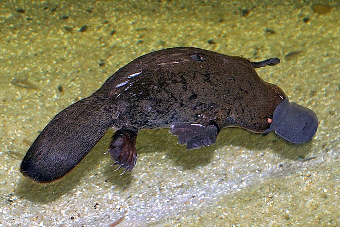
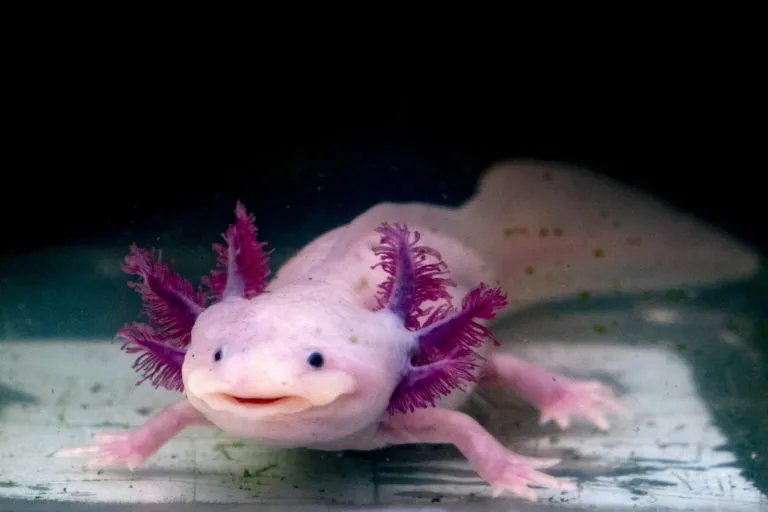
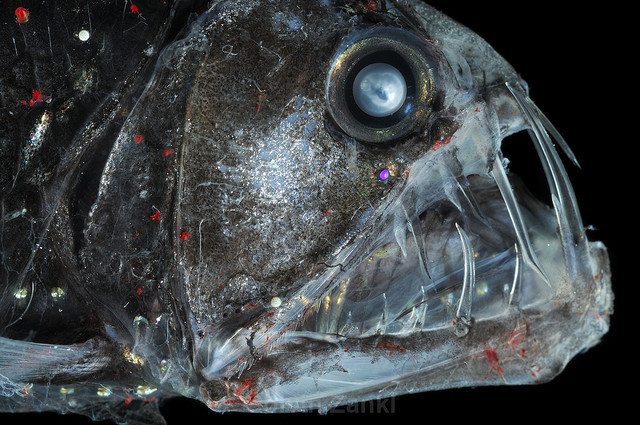

- Los animales raros son especies que se distinguen por características inusuales, ya sea por su apariencia, comportamiento, hábitat o biología.
Morfología extraña —formas corporales, colores o estructuras físicas poco comunes (ej. pez luna, axolote, narval).
Rareza numérica —especies en peligro de extinción con muy pocos individuos en el mundo.
Descubrimientos recientes —animales poco conocidos porque habitan zonas remotas o profundidades oceánicas.
Características evolutivas únicas —adaptaciones extremas que los diferencian del resto de su grupo taxonómico.
El ornitorrinco (Ornithorhynchus anatinus) es un mamífero semiacuático único en el mundo, endémico de Australia y Tasmania, y uno de los pocos mamíferos ovíparos (pone huevos), perteneciente al grupo de los monotremas. Tiene una apariencia híbrida: pico de pato, cola de castor, patas palmeadas y cuerpo peludo, y los machos poseen un espolón venenoso en las patas traseras.

El ajolote, axolote o axólotl, es un tipo de anfibio que nunca avanza a la edad adulta, esta metamorfosis, por ejemplo, es en la que los renacuajos pasan a ser ranas. Sitiado en su epidermis, el ajolote adulto, o adulta, no pierde sus branquias ni la cola, se queda como dicen los que saben “en la forma larvaria".

El pez dragón (Stomias boa) es una especie de pez estomiforme de la familia Stomiidae que vive en las profundidades abisales. Son peces alargados y de cuerpo aplanado. Los machos de S. b. colubrinus pueden llegar alcanzar los 40 cm de longitud total, las otras dos subespecies son menores, de unos 32 cm de longitud total. Tienen una gran boca y sus dientes pueden llegar a ser tan largos que no puedan llegar a cerrarla.
